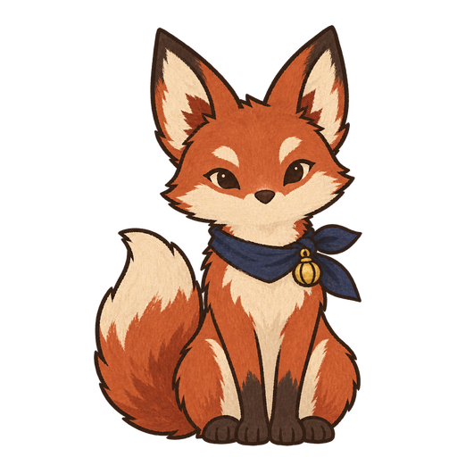

Japanese story adventure
LANTERN ALLEY

言葉の路地 — a Japanese story-walk for JLPT N2.
単語のデータは OpenJLPT によります。OpenJLPT は次のものからできています。
これらは CC BY-SA 4.0 で公開されています。このゲームの単語データも同じ条件で使えます。
日本語能力試験は、公式の語彙リストを公開していません。ここでの「N2」は、 広く使われている有志のリストによる目安です。試験そのものの中身ではありません。
Choose your character